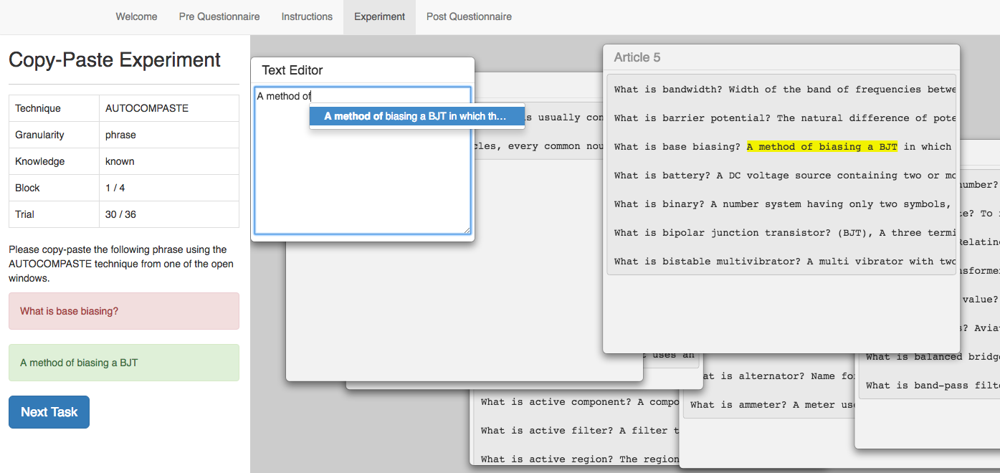

Dear participant , please read carefully the instructions before the experiment.
Once you press the button "Start", the experiment will begin.
The experiment should last less than 45 minutes.
With this experiment, we want to compare the efficiency, accuracy and learnability of two copy-pasting technique. Thus, you are asked to be focused during the experiment and try to finish as fast as you can, while making as few mistakes as possible.
Once you press "Start", you will have an interface like this one:
There are 2 panels (left and right)
The left panel is composed of:
* an array that indicates:
- the technique you have to use: "TRADITIONAL" or "AUTOCOMPASTE"
- the granularity of the passage you have to copy-paste: "paragraph", "sentence" or "word"
- whether you know the answer or no. Two possibilities:
1) "known". In this case, the answer is prompted in the green area. This is important: if the technique is traditional, you still have to find the answer in the right panel. You are not allowed to copy-paste it directly from the green area! However, if the technique is autocompaste, you can directly type in the text editor (which is in the right panel).
2) "unknown". In this case, the answer is not prompted, and you have to find it in the different articles in the right panel.
Remark: the answer you have to copy-paste will always be highlighted in yellow, even if it is prompted in the green area.
- the number of block: current block / total number of block. Each block is identical and is composed of 36 trials.
- the number of trial: current trial within the current block / total number of trial. Each trial correspond to a task.
To perform a task, you have to copy-paste the answer of the question that is asked in the red area, and then click "Next Task".
You are know ready to start the experiment. If you have any question, please ask Antoine before clicking "Start", since the timer will start then.
And remember, try to stay focusd, and be as accurate and fast as possible. Okey ? Let's go then !